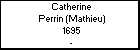
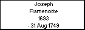
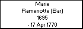
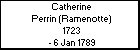
f a m i l y
Children with:
Nicolas Etienne
Children:
Marie Anne Henry (Etienne)
Catherine Etiene (Perrin)
Born: 12 Nov 1757, Provencheres. Sur Fave, Vosges, France
Married 13 Jun 1784, Provencheres. Sur Fave, Vosges, France, to
Nicolas Etienne
Died: 24 Apr 1821, Provencheres. Sur Fave, Vosges, France
Generated by
GreatFamily 2.2 update 2 - UNREGISTERED

 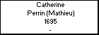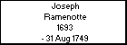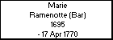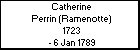
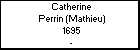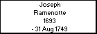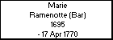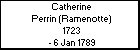